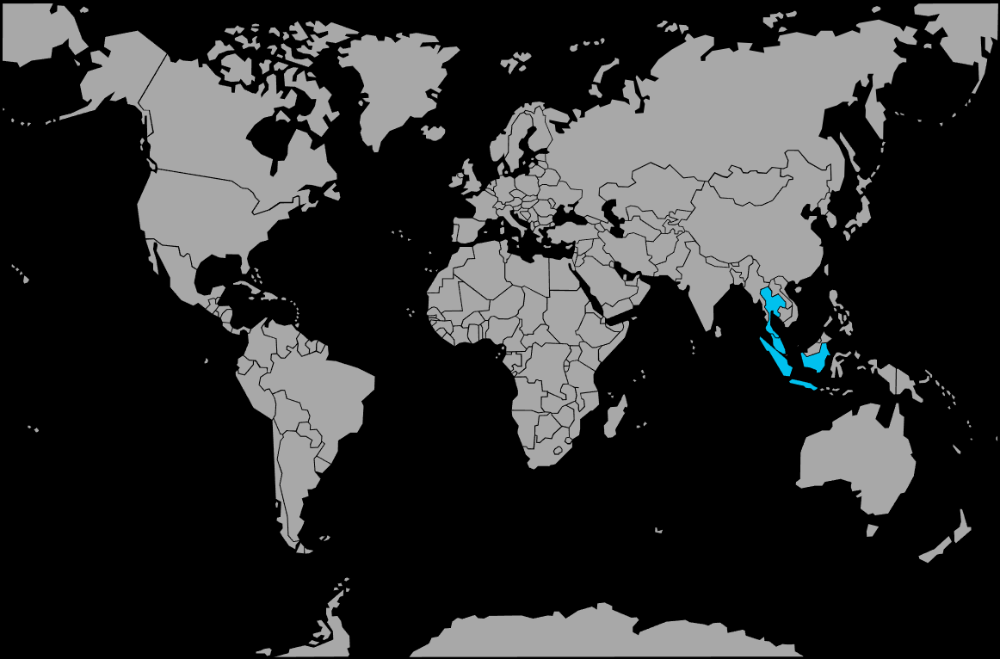

Systématique
- Ordre : Anabantiformes
- Famille : Osphronemidae
- Sous-famille : Luciocephalinae
- Genre : Trichogaster (syn. Trichopodus)
- Espèce : Trichogaster leerii
Trichogaster leerii (souvent rencontré sous le nom Trichopodus leerii) est un gourami asiatique paisible, apprécié pour sa robe perlée et sa ligne latérale orangée.
Les adultes atteignent en général 10–12 cm, avec un corps haut et comprimé typique des gouramis, et de longs filaments pelviens tactiles très développés.
L’espèce évolue plutôt en couple ou en petit groupe lâche, occupant la zone médiane et supérieure, entre les plantes et sous la végétation de surface.
Globalement calme, le gourami perlé peut toutefois se montrer territorial entre mâles adultes, surtout dans les bacs peu plantés ou trop petits.
Mode : ovipare avec nid de bulles ; le mâle construit un nid en surface, souvent parmi les plantes flottantes, puis y rassemble les œufs après la ponte.
Le mâle garde et entretient le nid jusqu’à l’éclosion, protégeant les œufs et les larves ; un bac spécifique et une surface calme sont fortement recommandés.
Dimorphisme sexuel : mâle plus coloré, avec gorge et poitrine orangées à rougeâtres, nageoires dorsale et anale plus pointues ; femelle plus ronde, couleurs plus ternes et nageoires plus courtes.
Espérance de vie : généralement 6 à 8 ans en aquarium, parfois jusqu’à une dizaine d’années dans de bonnes conditions.
Dans la nature, Trichogaster leerii fréquente les eaux calmes et peu profondes d’Asie du Sud‑Est (marais, fossés, lacs peu profonds, zones lentes de rivières), riches en végétation et souvent légèrement teintées par les tanins.
Répartition
Origine naturelle :
- Asie du Sud‑Est : péninsule malaise, Thaïlande, Indonésie (Sumatra, Bornéo) et régions voisines.
- Marais, fossés, étangs, plaines inondables et bras morts de rivières lentes, d’ordinaire peu profonds et densément végétalisés.
L’espèce vit dans des eaux chaudes, calmes et bien plantées, souvent douces et légèrement acides, ce qui doit être reproduit en aquarium pour limiter le stress et favoriser les comportements naturels.
Paramètres de maintenance
Température : 23 à 28 °C.
pH : 6,0 à 7,5, eau douce à légèrement acide ou neutre.
GH : 1 à 12 °dGH, eau plutôt douce à moyennement dure.
Courant : très faible à modéré, en évitant le fort brassage ; prévoir une zone calme en surface pour l’organe labyrinthe et le nid de bulles.
Volume conseillé : à partir de 200 L pour un groupe (un mâle avec plusieurs femelles) avec forte plantation, plantes de surface et de nombreuses cachettes.
Régime alimentaire
Régime : omnivore ; accepte paillettes et granulés de qualité, complétés par des proies vivantes ou congelées (artémias, daphnies, larves diverses) et quelques apports végétaux.
Une alimentation variée, distribuée en petites rations, contribue à maintenir une bonne santé, des couleurs intenses et favorise la reproduction.